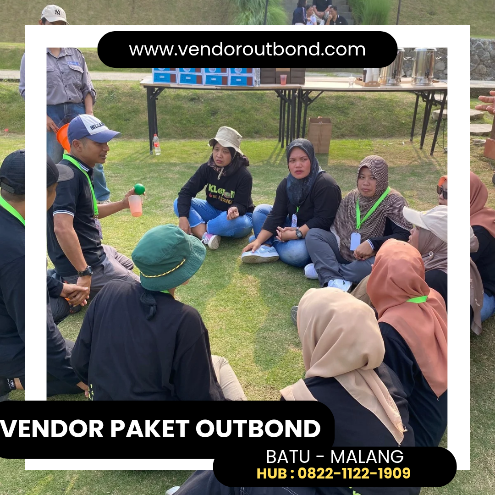

Salah satu kunci terpenting keberhasilan sebuah program outbound training yang berdampak nyata adalah pemilihan aktivitas yang tepat, relevan, dan dirancang dengan tujuan pembelajaran yang jelas. Aktivitas yang baik bukan hanya yang paling seru, mendebarkan, atau instragramable — melainkan yang secara intentional dirancang untuk menciptakan pengalaman bersama yang bermakna, memunculkan tantangan nyata yang relevan dengan kehidupan kerja, dan menghasilkan pembelajaran mendalam yang dapat langsung diterapkan oleh peserta.
Dalam artikel komprehensif ini, kami merekomendasikan 10 aktivitas outbound training terbaik yang telah terbukti efektif selama bertahun-tahun dalam meningkatkan kekompakan tim, mempererat komunikasi, mengembangkan kepemimpinan, dan membangkitkan kembali semangat kerja. Setiap aktivitas dilengkapi dengan deskripsi detail, tujuan pembelajaran yang spesifik, dan tips implementasi praktis untuk memaksimalkan dampaknya bagi tim unik Anda.
1. High Ropes Course — Menantang Keberanian dan Kepercayaan Diri
High ropes course adalah aktivitas yang menempatkan peserta di jalur tali yang terpasang pada ketinggian 4–10 meter di antara pohon atau tiang khusus yang kokoh. Peserta harus berjalan, memanjat, berayun, dan meniti berbagai elemen jalur sambil didampingi oleh instruktur bersertifikat dan dilindungi oleh sistem pengaman harness yang ketat dan telah tersertifikasi internasional.
Aktivitas ini secara luar biasa efektif untuk menantang zona nyaman peserta secara fisik dan psikologis, membangun keberanian dalam menghadapi ketidakpastian, dan mengembangkan kepercayaan diri yang genuine. Yang menarik, high ropes course juga menghadirkan pembelajaran tentang dukungan sosial — bagaimana semangat dan dorongan dari rekan setim dapat membantu seseorang melewati tantangan yang tampaknya mustahil untuk diatasi sendirian.
Tujuan Pembelajaran: Keberanian mengambil risiko yang terkalkulasi, manajemen rasa takut dan keraguan diri, dukungan emosional antar anggota tim, dan merayakan pencapaian bersama sebagai sebuah unit yang solid.
2. Flying Fox — Melepaskan Hambatan dan Menikmati Kebebasan Bersama
Flying fox mengajak peserta untuk meluncur dari ketinggian menggunakan tali baja dengan kecepatan dan sensasi yang luar biasa mendebarkan. Selain memberikan pengalaman yang tak terlupakan dan penuh adrenalin, flying fox mengajarkan pelajaran mendalam tentang kepercayaan — kepercayaan pada sistem pengamanan yang telah diuji, kepercayaan pada instruktur profesional yang memandu, dan kepercayaan pada diri sendiri untuk berani melepaskan pegangan dan terjun bebas menuju pengalaman baru.
Metafora ini sangat relevan dengan konteks kerja: seberapa sering kita menahan diri dari melompat ke peluang baru karena rasa takut yang belum tentu berdasar? Sesi debriefing pasca flying fox biasanya menghasilkan insights yang sangat personal dan kuat tentang keberanian, kepercayaan, dan mindset growth.
3. Army Challenge — Membangun Ketangguhan dan Semangat Korsa
Army challenge mengadaptasi elemen-elemen dari pelatihan militer ke dalam konteks yang menyenangkan, aman, dan bermakna untuk karyawan sipil. Peserta dikelompokkan dalam "regu" dan harus menyelesaikan berbagai pos tantangan fisik dan mental secara berurutan dan kompetitif: merayap di bawah jaring dengan tangan terikat, melewati rintangan air, menuntaskan kode-kode teka-teki dalam waktu terbatas, dan berkoordinasi dalam berbagai misi tim yang membutuhkan sinergi penuh.
Aktivitas ini sangat efektif untuk membangun ketangguhan mental (mental toughness), disiplin kolektif, dan semangat korsa tim yang kuat. Peserta belajar bahwa kegagalan satu anggota adalah kegagalan seluruh tim, dan keberhasilan individual hanya bermakna dalam konteks keberhasilan bersama.
"Dalam setiap tantangan yang diselesaikan bersama, ada benih kepercayaan yang ditanam. Benih inilah yang tumbuh menjadi fondasi tim yang luar biasa dan produktif di tempat kerja sehari-hari." — Ahmad, Fasilitator Outbound Training Senior
4. Amazing Race — Balap Strategi Tim yang Seru dan Edukatif
Terinspirasi dari acara TV yang terkenal di seluruh dunia, aktivitas Amazing Race membagi peserta menjadi beberapa tim yang berlomba menyelesaikan serangkaian misi kreatif di berbagai pos yang tersebar di seluruh area outbound. Setiap pos menyajikan tantangan yang unik dan berbeda — dari teka-teki kreatif yang mengasah logika, tantangan fisik yang membutuhkan kekuatan tim, misi seni dan kreativitas, hingga tantangan pengetahuan umum yang mengasyikkan. Tim pertama yang berhasil menyelesaikan semua misi dan tiba di garis finish dengan skor tertinggi adalah pemenangnya.
Tujuan Pembelajaran: Perencanaan strategis dan alokasi sumber daya tim, pembagian peran yang efektif sesuai keahlian masing-masing, komunikasi dan koordinasi yang efisien dalam tekanan waktu yang ketat, serta kemampuan adaptasi cepat terhadap situasi yang tidak terduga dan perubahan kondisi lapangan.

5. Bridging — Membangun Jembatan Kepercayaan Antar Tim
Dalam aktivitas bridging yang penuh metafora ini, setiap kelompok hanya mendapatkan separuh dari material (tali, bambu, atau duplex) dan separuh dari desain/blueprint sebuah jembatan. Mereka harus bernegosiasi secara aktif dan berkolaborasi dengan kelompok lain yang memegang separuhnya untuk membangun jembatan yang benar-benar fungsional — cukup kuat untuk dilalui oleh anggota tim.
Aktivitas ini menjadi metafora yang sangat kuat dan relevan tentang pentingnya kolaborasi antar departemen dalam organisasi, negosiasi yang menghasilkan win-win solution bagi semua pihak, berbagi informasi dan sumber daya yang selama ini mungkin disimpan dalam silo-silo departemen, serta kepercayaan bahwa tim lain memiliki niat dan tujuan yang sama yaitu keberhasilan organisasi secara keseluruhan.
6. Escape Room Outdoor — Memecahkan Misteri Bersama dalam Batas Waktu
Versi outdoor dari konsep escape room yang semakin populer ini menempatkan tim dalam sebuah skenario misterius yang kaya narasi dan harus dipecahkan dalam waktu terbatas yang mendebarkan. Menggunakan berbagai clue tersembunyi, puzzle kriptografi, riddle visual, dan teka-teki logika yang tersebar di seluruh area outbound, tim harus bekerja sama secara cerdas, sistematis, dan penuh kreativitas untuk menemukan semua jawaban dan "melarikan diri" sebelum waktu habis.
Aktivitas ini sangat efektif untuk mengembangkan kemampuan berpikir kritis, analitis dan lateral, creative problem solving dalam keterbatasan sumber daya, komunikasi yang efisien dalam tekanan, serta kepemimpinan yang adaptif dan distributif — di mana setiap anggota tim bergilir mengambil inisiatif sesuai kompetensinya.
7. River Crossing — Menaklukkan Rintangan Alam Bersama
Aktivitas air seperti river crossing memberikan dimensi tantangan yang berbeda secara fundamental dari aktivitas darat — dan hasilnya selalu sangat berkesan dan diingat lama. Menyeberangi sungai menggunakan tali yang direntangkan, bambu yang dijadikan jembatan darurat, atau perahu karet sederhana yang diayuh bersama membutuhkan koordinasi sempurna antara seluruh anggota tim yang berada di berbagai posisi strategis.
Satu orang yang tidak mengikuti ritim, tidak mendengar instruksi, atau kehilangan fokus dapat membuat seluruh tim kehilangan keseimbangan. Ini adalah pelajaran yang sangat kuat dan visceral tentang pentingnya sinkronisasi, ketergantungan positif antar individu, kepemimpinan situasional yang fleksibel, dan kepercayaan bahwa setiap anggota tim akan menjalankan perannya dengan penuh tanggung jawab.

8. Cooking Challenge — Berkreasi dan Berkolaborasi di Dapur Alam
Cooking challenge adalah salah satu aktivitas team building yang paling kreatif, inklusif, dan selalu disambut antusias oleh peserta dari semua latar belakang. Tim diberi bahan-bahan masakan yang beragam, peralatan memasak sederhana, dan tantangan untuk membuat hidangan spesifik dalam waktu terbatas — sering kali dengan tema atau konsep tertentu yang harus tercermin dalam presentasi hidangan.
Keunikan cooking challenge terletak pada inklusivitasnya yang tinggi — tidak membutuhkan kemampuan fisik khusus dari peserta, sehingga seluruh anggota tim dapat berpartisipasi penuh dan kontribusi setiap orang benar-benar terasa bermakna. Namun di balik keseruannya, cooking challenge menyimpan pembelajaran yang sangat dalam: pembagian peran berdasarkan keahlian yang dimiliki masing-masing individu, manajemen waktu yang ketat, kreativitas dalam keterbatasan bahan yang tersedia, dan pentingnya mengutamakan tujuan bersama di atas ego personal.
9. Trust Fall dan Trust Walk — Fondasi Kepercayaan yang Dibangun Secara Fisik
Trust fall (menjatuhkan diri dengan kepercayaan penuh ke belakang untuk ditangkap oleh rekan-rekan tim) dan trust walk (berjalan dengan mata tertutup sepenuhnya sambil dipandu oleh rekan yang bertanggung jawab penuh atas keselamatan) adalah dua aktivitas klasik yang telah melewati ujian waktu selama puluhan tahun dan tetap sangat relevan serta kuat dampaknya.
Kesederhanaan yang terlihat di permukaan menyembunyikan kedalaman emosional yang luar biasa dan sering mengejutkan peserta. Saat seseorang mengambil keputusan untuk menjatuhkan dirinya ke belakang dan merasakan tangan-tangan rekan kerjanya menopang dengan sigap, ada transfer kepercayaan fisik yang sangat kuat dan visceral yang mengubah dinamika hubungan antar individu secara mendalam — sebuah pengalaman yang sulit diciptakan di lingkungan kerja formal sehari-hari.
10. Campfire Ceremony — Mengintegrasikan Semua Pembelajaran dengan Bermakna
Aktivitas terakhir yang tidak kalah pentingnya dari semua aktivitas sebelumnya adalah sesi refleksi dan campfire ceremony di penghujung seluruh rangkaian program outbound. Dalam lingkaran api unggun yang hangat dan intim, setiap peserta diundang untuk berbagi secara terbuka: pengalaman paling berkesan selama program, pembelajaran terpenting yang akan mereka bawa pulang, dan komitmen perubahan konkret yang akan mereka implementasikan dalam pekerjaan sehari-hari mulai besok.
Inilah momen di mana transfer of learning yang sesungguhnya terjadi secara kolektif dan penuh makna. Pengalaman yang telah dialami bersama dikonversi menjadi wawasan baru, wawasan dikonversi menjadi komitmen yang dinyatakan di depan umum, dan komitmen tersebut dikonversi menjadi tindakan nyata yang mengubah cara kerja tim sehari-hari. Campfire ceremony juga menciptakan memori kolektif positif yang menjadi ikatan emosional kuat antar anggota tim untuk bertahun-tahun ke depan — sebuah warisan cultural yang tak ternilai harganya.
Kesimpulan
Dari 10 aktivitas outbound training terbaik yang telah dibahas secara mendalam dalam artikel ini, tidak ada satu aktivitas tunggal yang paling unggul secara universal untuk semua konteks dan tujuan. Setiap aktivitas memiliki kekuatan, karakteristik, dan konteks terbaiknya masing-masing yang unik. Kunci sukses program outbound training yang benar-benar berdampak adalah kombinasi aktivitas yang tepat — dipilih dengan cermat berdasarkan tujuan spesifik tim, difasilitasi oleh instruktur yang kompeten dan berpengalaman, dan diakhiri dengan proses refleksi yang mendalam, bermakna, dan terhubung erat dengan realita kerja sehari-hari peserta.
Investasikan waktu dan energi yang cukup untuk mendiskusikan pilihan dan kombinasi aktivitas secara mendalam dengan vendor outbound training Anda sebelum program dirancang. Vendor profesional yang berpengalaman akan membantu Anda memilih dan mengkombinasikan aktivitas-aktivitas yang paling relevan dengan kebutuhan tim Anda untuk menciptakan program yang benar-benar transformatif dan memberikan dampak jangka panjang yang nyata.